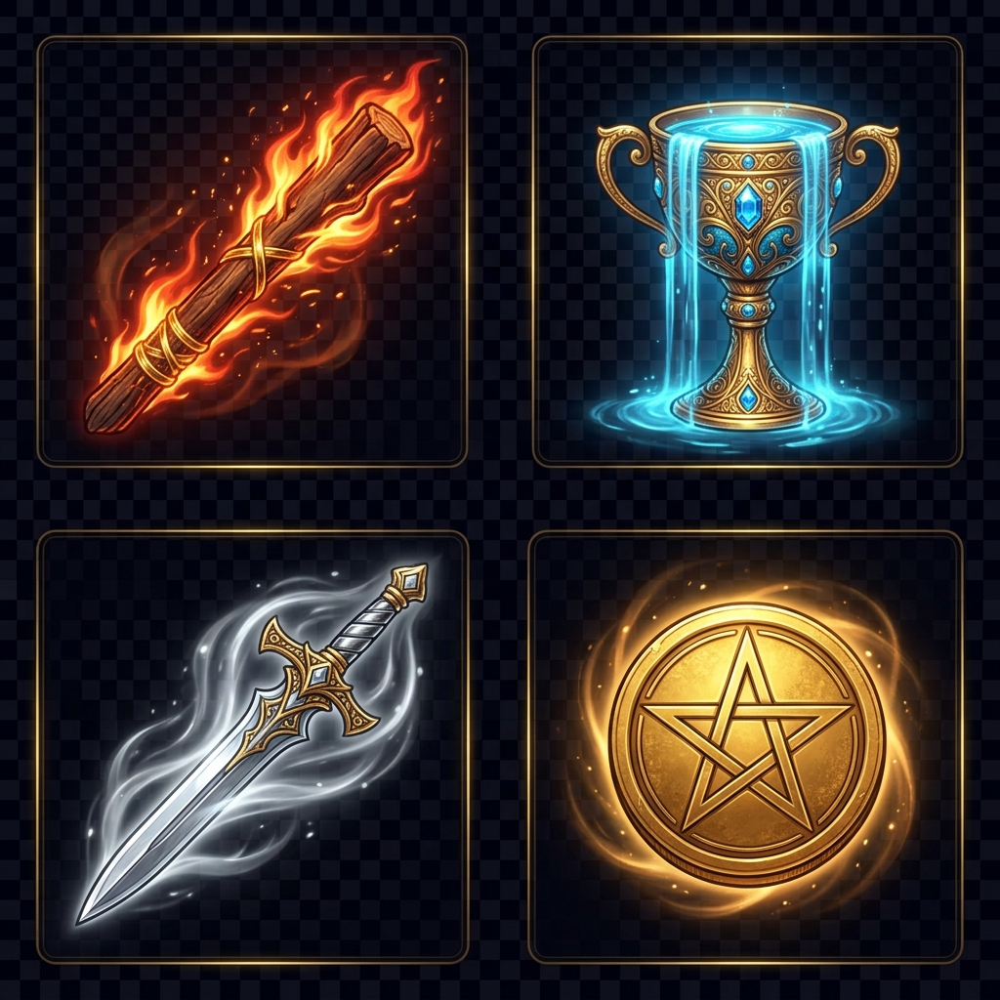

Principios de Lectura
El tarot como lenguaje simbólico, no como destino.
-
✧
La imagen primero: Antes de aplicar un significado, describe la escena: quién actúa, hacia dónde mira, qué sostiene, paisaje y qué está ausente.
-
✧
El contexto manda: Una misma carta cambia según la pregunta, la posición y las cartas vecinas.
-
✧
No hay destino cerrado: Una tirada muestra dinámicas, tensiones, recursos y direcciones posibles, no un veredicto.
-
✧
Las cartas difíciles no son "malas": La Torre, La Muerte, El Diablo señalan crisis, cierres, apegos o revelaciones necesarias.
-
✧
Invertidas opcionales: Si las usas, son bloqueo, interiorización, exceso, retraso o resistencia.
Ética y Límites
No usaremos el tarot para predecir muerte, enfermedad, embarazo, resultados judiciales, decisiones financieras o diagnósticos psicológicos. Si la consulta toca esos temas, la lectura se orientará a claridad, apoyo y decisiones responsables.
Gramática Simbólica
Colores
- Amarillo: Conciencia, claridad, energía.
- Rojo: Vitalidad, pasión, acción.
- Azul: Calma, interioridad, emoción.
- Blanco: Apertura, pureza, intención.
- Negro: Límite, misterio, lo no visible.
Paisajes & Objetos
- Montañas: Reto, distancia, logro, exigencia.
- Agua: Emoción, inconsciente, fluidez.
- Camino: Opciones, dirección, proceso.
- Flores/Jardines: Crecimiento, belleza.
- Manos: Acción, recepción, intercambio.
Los Arcanos
Explora el viaje de las 78 cartas del RWS.
Arcanos Mayores
Arcanos Menores
La lectura se vuelve precisa al cruzar: tema del palo + etapa del número + posición en la tirada.
Bastos (Fuego)
Acción, iniciativa, pasión, proyectos, deseo, conflicto energético. "¿Qué necesita movimiento?"
Copas (Agua)
Emociones, relaciones, intuición, vínculos, sanación. "¿Qué siento o necesito cuidar?"
Espadas (Aire)
Pensamiento, verdad, comunicación, decisiones, tensión mental. "¿Qué verdad o conflicto requiere claridad?"
Oros (Tierra)
Trabajo, dinero, cuerpo, hábitos, recursos, estabilidad. "¿Qué puede construirse o sostenerse?"

Catálogo de BastosCatálogo de Copas
Catálogo de Espadas
Catálogo de Oros
El Viaje Numérico
Figuras de Corte
- Sota: Aprendizaje, curiosidad, noticia, inicio, exploración.
- Caballero: Movimiento, búsqueda, impulso, misión, energía.
- Reina: Dominio interior, cuidado, recepción, madurez emocional/intuitiva.
- Rey: Dirección, autoridad, estructura, responsabilidad, dominio externo.
Las figuras no deben asignarse automáticamente a género, edad o persona concreta. Son energías o etapas.
Tiradas
Estructuras para formular y responder preguntas.
Una Carta
Uso: Reflexión diaria, claridad puntual.
Protocolo: Pregunta abierta ("¿Qué necesito observar hoy?") → Descripción visual → Núcleo → Aplicación práctica.
Tres Cartas
La tirada base para aprender relaciones entre símbolos.
Variantes: (Pasado-Presente-Futuro) / (Mente-Corazón-Acción) / (Yo-Relación-Dinámica)
Cinco Cartas
Útil para decisiones complejas.
- Situación actual
- Desafío principal
- Recurso interno (lo que tienes)
- Factor externo (entorno)
- Consejo o próximo paso
Cruz Celta
Para preguntas profundas cuando ya dominas tiradas breves. La posición 10 muestra la tendencia actual, no un hecho inevitable.
Combinaciones Comunes
Amor y Vínculos
Enamorados + Dos de Copas: Elección consciente de vínculo, afinidad y acuerdo.
La Torre + Tres de Espadas: Ruptura dolorosa; prioriza la verdad y el autocuidado.
La Estrella + As de Copas: Apertura emocional, sanación y renovación.
El Diablo + Nueve de Copas: Apego, deseo o dinámica de poder disfrazada de placer.
Trabajo y Dinero
El Mago + As de Oros: Oportunidad concreta para usar habilidades en algo material.
Ocho de Oros + Rey de Oros: Desarrollo de oficio, disciplina y crecimiento profesional.
Diez de Bastos + Cuatro de Espadas: Sobrecarga que exige descanso urgente y delegar.
Decisiones
Dos de Espadas + La Sacerdotisa: No decidas aún; escucha la información interna o espera.
El Carro + Ocho de Bastos: Momento de avanzar con dirección y rapidez.
El Colgado + La Muerte: Pausa que prepara irremediablemente una transformación.
Práctica Activa
El tarot se domina mediante la observación y el registro.
Laboratorio de Lectura
Genera una tirada aleatoria. Toca cada carta para ver su significado completo.

Historial de Tiradas
Aún no has realizado ninguna tirada. ¡Prueba el Laboratorio!
Plan de Estudio · 8 Semanas
Marca cada tema cuando lo hayas estudiado. Tu progreso se guarda automáticamente.
0% completado
Cómo usar el Diario
Después de cada tirada, anota en tu cuaderno siguiendo esta estructura:
- Fecha y pregunta exacta que formulaste.
- Tipo de tirada y posición de cada carta.
- Descripción visual inicial (sin consultar significados).
- Significado consultado (Núcleo y Sombra).
- Tu interpretación personal / síntesis.
- Una acción concreta o reflexión.
- Revisión posterior (vuelve días después a releer).